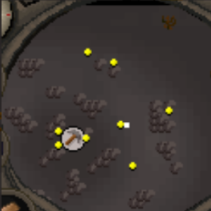
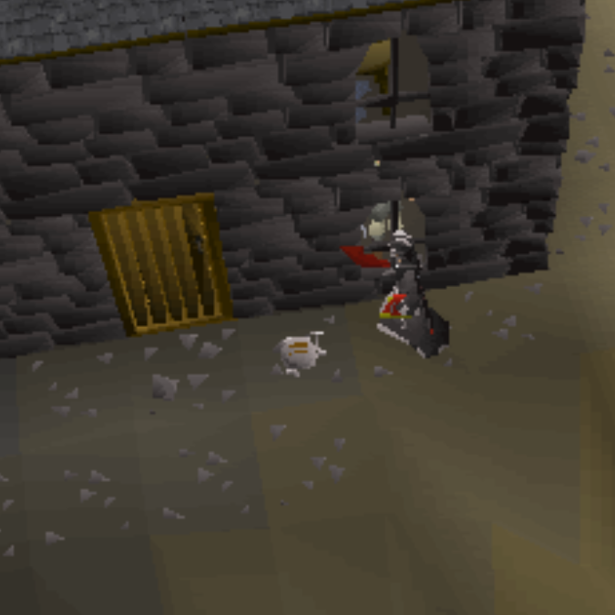
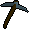
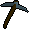
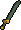

RS Hard Clue Helper
| Clue | NPC |
|---|---|
| O BIRDZ A ZANY EN PC | Cap'n Izzy No-Beard |
| LARK IN DOG | King Roland |
| AHA JAR | Jaraah |
| BAIL TRIMS | Brimstail |
| C ON GAME HOC | Gnome Coach |
| GOBLIN KERN | King Bolren |
| ICY FE | Fycie |
| Clue | Location | Teleport Method |
|---|---|---|
| 25 degrees 03 minutes north 17 degrees 05 minutes east | 8 3 3 |
|
| 16 degrees 03 minutes north 14 degrees 07 minutes east | 1 2 3 2  2 2 |
|
| 07 degrees 43 minutes south 12 degrees 26 minutes east | 1 2 3 2 2 |
|
| 18 degrees 50 minutes north 20 degrees 26 minutes east |  | 1 2 3 2 3 2  |
| 24 degrees 56 minutes north 22 degrees 28 minutes east | 1 2 3 2 2 Lever |
|
| 04 degrees 16 minutes south 16 degrees 16 minutes east | 3 3 10 Charter ship - (shipyard) |
|
| 15 degrees 30 minutes north 24 degrees 16 minutes east | 1 2 3 2 2 |
|
| 03 degrees 45 minutes south 22 degrees 45 minutes east | 1 2 3 2 1 FAIRY RING - BIQ |
|
| 25 degrees 03 minutes north 23 degrees 24 minutes east | 1 2 3 2 2 Lever |
|
| 05 degrees 50 minutes south 10 degrees 05 minutes east | 1 2 3 2 1 FAIRY RING - CKR |
|
| 22 degrees 45 minutes north 26 degrees 33 minutes east | 1 2 3 2 2  |
|
| 17 degrees 50 minutes north 08 degrees 30 minutes east | 1 2 3 2 1 FAIRY RING - DKS |
|
| 19 degrees 43 minutes north 25 degrees 07 minutes east | 1 2 3 2 2 |
|
| 06 degrees 00 minutes south 21 degrees 48 minutes east | 1 2 3 2 1 FAIRY RING - BIQ |
|
| 16 degrees 07 minutes north 22 degrees 45 minutes east | 1 2 3 2 2 |
|
| 16 degrees 43 minutes north 19 degrees 13 minutes east | 1 2 3 2 3 2 |
|
| 19 degrees 00 minutes north 27 degrees 13 minutes east | 1 2 3 2 2 |
|
| 22 degrees 35 minutes north 19 degrees 18 minutes east | 1 2 3 8 2 |
|
| 24 degrees 24 minutes north 26 degrees 24 minutes east | 1 2 3 2 2 |
|
| 24 degrees 56 minutes north 22 degrees 56 minutes east | 1 2 3 1 5 Lever |
|
| 24 degrees 58 minutes north 18 degrees 43 minutes east |  | 1 2 3 |
| Clue | Location | Teleport Method |
|---|---|---|
| If you look closely enough, it seems that the archers have lost more than their needles. | OR 3 3 10 |
|
| You have all of the elements available to solve this clue. Fortunately you do not have to go so far as to stand in a draft. | 1 2 3 1 5 |
|
| This carte is mine, all mine, even if it is in the middle of the desert. | 1 2 3 2 1 FAIRY RING - B I Q |
|
| This aviator is at the peak of his profession | RING OF DUELING - Duel Arena
GLIDER - Ta Quir Priw GLIDER - Sindarpos |
|
| I lie lonely and forgotten in mid wilderness, Where the dead rise from their beds. Feel free to Quarrel and wind me up, and dig while you shoot their heads. | 1 2 3 2 2 |
| Clue (equip) |
|---|
| Yawn in the rogue's general store.
Equip:    |
| Salute in the Banana Plantation.
Equip: and nothing on your chest and legs. |
| Blow a kiss between the tables in Shilo Village bank.
Equip: |
| Blow a raspberry in the Fishing Guild bank.
Equip:  |
| Bow at the top of the lighthouse.
Equip:  and no jewellery. and no jewellery. |
| Dance at the cat-doored pyramid in Sophanem.
Equip:  |
| Laugh in Jokul's tent in the Mountain Camp.
Equip: |
| Panic by the pilot on White Wolf Mountain.
Equip: |
| Panic in the heart of the Haunted Woods.
Equip: Have no items equipped when you do. |
| Shrug in the Zamorak temple found in the Eastern Wilderness.
Equip: |
| Clue (Map) |
|---|